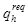
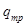

Система нормативных документов в строительстве
СТРОИТЕЛЬНЫЕ НОРМЫ И ПРАВИЛА РОССИЙСКОЙ ФЕДЕРАЦИИ
|
ДОМА ЖИЛЫЕ ОДНОКВАРТИРНЫЕ СНиП 31-02-2001 |
ГОСУДАРСТВЕННЫЙ КОМИТЕТ
РОССИЙСКОЙ ФЕДЕРАЦИИ
ПО СТРОИТЕЛЬСТВУ И ЖИЛИЩНО-КОММУНАЛЬНОМУ КОМПЛЕКСУ
(ГОССТРОЙ РОССИИ)
Москва 2001
ПРЕДИСЛОВИЕ
1 РАЗРАБОТАНЫ Федеральным государственным унитарным предприятием - Центром методологии нормирования и стандартизации в строительстве (ФГУП «ЦНС») с участием коллектива специалистов ведущих научно-исследовательских и проектных организаций
ВНЕСЕНЫ Управлением стандартизации, технического нормирования и сертификации Госстроя России
2 ПРИНЯТЫ И ВВЕДЕНЫ В ДЕЙСТВИЕ С 1 января 2002 г. постановлением Госстроя России от 22 марта 2001 г. № 35
3 ВВЕДЕНЫ ВПЕРВЫЕ
СОДЕРЖАНИЕ
|
Перечень нормативных документов, на которые имеются ссылки в тексте |
|
|
Термины и определения |
|
Настоящие строительные нормы и правила разработаны в связи с возрастающим объемом строительства и развитием рынка одноквартирных жилых домов. Этот вид строительства получает все более широкое распространение в мире, в связи с чем Технический комитет 59 «Строительство зданий» Международной организации по стандартизации (ИСО) приступил к разработке ряда стандартов эксплуатационных характеристик «односемейных отдельно стоящих и блокированных жилых домов».
В соответствии с принципами СНиП 10-01-94 «Система нормативных документов в строительстве. Основные положения» настоящими нормами устанавливается комплекс обязательных нормативных требований к эксплуатационным характеристикам одноквартирных жилых домов, включая вопросы безопасности, независимо от их конструктивных систем и применяемых строительных материалов.
Нормы должны применяться к домам независимо от того, строятся ли они за счет средств государственного или муниципального бюджета, средств организаций-застройщиков, осуществляющих строительство с целью последующей продажи или сдачи в аренду, или за счет средств индивидуальных застройщиков, строящих дома для собственных нужд.
Одноквартирные жилые дома, начатые строительством по проектной документации, разработанной и утвержденной до 1 января 2002 г., могут продолжать строиться и вводиться в эксплуатацию без корректировки проектной документации на соответствие требованиям настоящих строительных норм и правил.
В связи с введением в действие настоящих норм и правил область распространения СНиП 2.08.01-89* «Жилые здания» ограничивается только многоквартирными жилыми зданиями. Предусматривается также разработка сводов правил рекомендательного характера по проектированию и строительству одноквартирных жилых домов. В числе первых разрабатываются своды правил по проектированию и строительству домов с несущими стенами каркасной конструкции и по инженерным системам одноквартирных домов.
Настоящие строительные нормы и правила разработаны при поддержке Канадской корпорации ипотеки и жилищного строительства и Национального исследовательского совета Канады.
В разработке СНиП приняли участие: Л.А. Викторова, канд. арх.; В.А. Глухарев; Ю.Г. Граник, канд.техн.наук; В.Н. Зигерн-Корн, канд.техн.наук; С.В. Кролевец, канд. арх.; Д.М. Лаковский; Ю.А. Матросов, канд.техн.наук; С.Н. Нерсесов, канд.техн.наук; Е.Ю. Пересветов, канд. арх.; Н.Н. Поляков; А.В. Цареградский; Е.П. Шаститко; Л.С. Экслер.
СТРОИТЕЛЬНЫЕ НОРМЫ И ПРАВИЛА РОССИЙСКОЙ ФЕДЕРАЦИИ
|
ДОМА ЖИЛЫЕ ОДНОКВАРТИРНЫЕ SINDLE-FAMILY HOUSES |
|
Дата введения 2002-01-01 |
Настоящие нормы и правила распространяются на вновь строящиеся и реконструируемые одноквартирные жилые дома, предназначенные для постоянного проживания людей (далее - дома), и устанавливают требования к их безопасности и другим эксплуатационным характеристикам, обязательные для соблюдения всеми юридическими и физическими лицами, осуществляющими проектирование и строительство домов.
Настоящие нормы распространяются также на блокированные дома, жилые блоки которых являются автономными и рассматриваются как отдельные одноквартирные дома, если они:
не имеют помещений, расположенных над помещениями других жилых блоков;
не имеют общих входов, вспомогательных помещений, чердаков, подполий, шахт коммуникаций;
имеют самостоятельные системы отопления и вентиляции, а также индивидуальные вводы и подключения к внешним сетям централизованных инженерных систем.
Блокированные дома, не отвечающие этим условиям, проектируют и строят в соответствии с требованиями СНиП 2.08.01.
При проектировании и строительстве домов в соответствии с настоящими нормами и правилами должны применяться также положения других более общих норм и правил, распространяющиеся на жилые одноквартирные дома, если они не противоречат требованиям настоящего документа.
В настоящих нормах и правилах использованы ссылки на нормативные документы, перечень которых приведен в приложении А.
Определения терминов, применяемых в данном документе, приведены в приложении Б
4.1 Строительство домов должно осуществляться в соответствии с требованиями настоящих строительных норм и правил и других нормативных документов, устанавливающих правила проектирования и строительства, на основании разрешения на строительство, удостоверяющего право собственника, владельца, пользователя, арендатора земельного участка (далее - застройщик) осуществить его застройку по проектной документации, согласованной и утвержденной в установленном порядке.
При индивидуальном строительстве домов могут применяться упрощенные процедуры разработки, согласования, утверждения проектной документации, надзора в процессе строительства, приемки дома и ввода его в эксплуатацию в соответствии с порядком, установленным органом государственной власти субъекта Российской Федерации на основе общих требований законодательства и соответствующих нормативных документов по строительству.
4.2 Размещение дома и хозяйственных построек на участке, расстояния от них до строений на соседнем участке, а также состав, назначение и площадь встроенных или пристроенных к дому помещений общественного назначения, в том числе связанных с индивидуальной предпринимательской деятельностью владельца, должны соответствовать ограничениям, установленным в разрешении на строительство и (или) архитектурно-планировочном задании в соответствии с действующим законодательством, нормативными документами по проектированию и строительству и требованиями, вытекающими из охраняемых законодательством прав жителей соседних домов (жилых блоков).
Во встроенных или пристроенных к дому помещениях общественного назначения не допускается размещать магазины строительных материалов, магазины с наличием взрывопожароопасных веществ и материалов, а также предприятия бытового обслуживания, в которых применяются легковоспламеняющиеся жидкости (за исключением парикмахерских, мастерских по ремонту часов и обуви).
4.3 Состав помещений дома, их размеры и функциональная взаимосвязь, а также состав инженерного оборудования определяются застройщиком. В доме должны быть созданы условия для отдыха, сна, гигиенических процедур, приготовления и приема пищи, а также для другой деятельности, обычно осуществляемой в жилище.
4.4 Дом должен включать как минимум следующий состав помещений: жилая(ые) комната(ы), кухня (кухня-ниша) или кухня-столовая, ванная комната или душевая, уборная, кладовая или встроенные шкафы; при отсутствии централизованного теплоснабжения - помещение для теплового агрегата.
В доме должно быть предусмотрено отопление, вентиляция, водоснабжение, канализация, электроснабжение и радиовещание.
Площади помещений дома определяются с учетом расстановки необходимого набора мебели и оборудования и должны быть не менее: общей жилой комнаты - 12 м2 спальни - 8 м2 (при размещении ее в мансарде - 7 м2); кухни - 6 м2.
Ширина помещений должна быть не менее: кухни и кухонной зоны в кухне-столовой - 1,7м, передней - 1,4 м, внутриквартирных коридоров - 0,85 м, ванной - 1,5 м, уборной - 0,8м. Глубина уборной должна быть не менее 1, 2 м при открывании двери наружу и не менее 1,5 м при открывании двери внутрь.
4.5 Высота (от пола до потолка) жилых комнат и кухни в климатических районах IА, IБ, IГ, IД и IIА (по СНиП 23-01 ) должна быть не менее 2,7 м, в остальных - не менее 2,5 м. Высоту жилых комнат, кухни и других помещений, расположенных в мансарде, и при необходимости в других случаях, определяемых застройщиком, допускается принимать не менее 2,3 м. В коридорах и при устройстве антресолей высота помещений может приниматься не менее 2,1 м.
4.6 При проектировании и строительстве дома должны быть обеспечены условия для маломобильных жителей, а при необходимости - также для инвалидов, пользующихся креслами-колясками. С этой целью должны быть предусмотрены необходимых габаритов дорожки на участке и пандусы, а также соответствующие размеры дверей, тамбуров, коридоров и кухонь, уборных и ванных комнат.
4.7 По требованию застройщика в составе документации на дом должны представляться теплоэнергетический паспорт и инструкция по эксплуатации дома.
Теплоэнергетический паспорт предназначен для установления теплоэнергетических характеристик теплозащиты дома и его энергопотребления. Он составляется в порядке и по форме, установленных в действующих нормативных документах, с учетом положений раздела 9 настоящих норм и правил. В паспорте указывается категория энергетической эффективности дома. Теплоэнергетический паспорт не предназначен для расчетов за коммунальные и другие услуги, оказываемые владельцу дома.
Инструкция по эксплуатации дома должна содержать данные, необходимые владельцу дома для обеспечения безопасности в процессе эксплуатации, в том числе сведения об основных конструкциях и инженерных системах, схемы расположения скрытых элементов каркаса, скрытых проводок и инженерных сетей, а также предельные значения нагрузок на элементы конструкций дома и на его электросеть. Эти данные могут быть представлены в виде копий исполнительной документации.
4.8 Правила подсчета площадей помещений, определения объема и этажности дома принимают по СНиП 2.08.01.
5.1 Основания и несущие конструкции дома должны быть запроектированы и возведены таким образом, чтобы в процессе его строительства и в расчетных условиях эксплуатации была исключена возможность:
разрушений или повреждений конструкций, приводящих к необходимости прекращения эксплуатации дома;
недопустимого ухудшения эксплуатационных свойств конструкций или дома в целом вследствие деформаций или образования трещин.
5.2 Конструкции и основания дома должны быть рассчитаны на восприятие следующих нагрузок и воздействий:
постоянные нагрузки от собственного веса несущих и ограждающих конструкций;
временные равномерно распределенные и сосредоточенные нагрузки на перекрытия;
снеговые нагрузки для данного района строительства;
ветровые нагрузки для данного района строительства.
Нормативные значения перечисленных нагрузок, учитываемые неблагоприятные сочетания нагрузок или соответствующих им усилий, предельные значения прогибов и перемещений конструкций, а также значения коэффициентов надежности по нагрузке должны быть приняты в соответствии с требованиями СНиП 2.01.07. Должны быть учтены также указанные в задании на проектирование дополнительные требования заказчика (например, к нагрузкам от печей, каминов, тяжелых элементов навесного оборудования и т.д.).
5.3 Используемые при проектировании конструкций методы расчета их несущей способности и деформативности должны отвечать требованиям действующих нормативных документов на конструкции из соответствующих материалов.
При размещении дома на подрабатываемой территории, на просадочных грунтах, в сейсмических районах, а также в других сложных геологических условиях следует учитывать дополнительные требования соответствующих норм и правил.
5.4 Фундаменты дома должны быть запроектированы с учетом физико-механических характеристик грунтов, предусмотренных в СНиП 2.02.01 (для вечномерзлых грунтов - в СНиП 2.02.04), характеристик гидрогеологического режима на площадке застройки, а также степени агрессивности грунтов и грунтовых вод по отношению к фундаментам и подземным инженерным сетям и должны обеспечивать необходимую равномерность осадок оснований под элементами дома.
5.5 При строительстве традиционных домов в сельской местности высотой до двух этажей включительно, возводимых застройщиками собственными силами, решение о возможности применения технических решений по устройству фундаментов и несущих конструкций дома может быть принято при выдаче разрешения на строительство на основе результатов предыдущего строительства и эксплуатации домов.
6.1 Одноквартирные жилые дома относятся к классу Ф 1.4 функциональной пожарной опасности по СНиП 21-01. В связи с этим при проектировании и строительстве домов должны быть предусмотрены установленные настоящими нормами меры по предупреждению возникновения пожара, обеспечению возможности своевременной эвакуации людей из дома на прилегающую к нему территорию, нераспространению огня на соседние строения и жилые блоки, а также обеспечению доступа личного состава пожарных подразделений к дому для проведения мероприятий по тушению пожара и спасению людей. При этом учитывается возможность возникновения огня внутри любого помещения и выхода его на поверхность дома.
6.2 Противопожарные расстояния между домами, а также другими сооружениями должны соответствовать требованиям СНиП 2.07.01.
Смежные жилые блоки следует разделять глухими противопожарными стенами с пределом огнестойкости не менее RЕI 45 и класса пожарной опасности не ниже К1. Блокированные дома классов конструктивной пожарной опасности С2 и СЗ дополнительно должны быть разделены глухими противопожарными стенами 1-го типа по СНиП 21-01 с пределом огнестойкости не менее RЕI 150 и класса пожарной опасности не ниже КО на пожарные отсеки площадью этажа не более 600 м2, включающие один или несколько жилых блоков.
6.3 К домам высотой до двух этажей включительно требования по степени огнестойкости и классу конструктивной пожарной опасности не предъявляются.
6.4 В домах высотой 3 этажа основные конструкции должны соответствовать требованиям, предъявляемым к конструкциям зданий III степени огнестойкости по СНиП 21-01: предел огнестойкости несущих элементов должен быть не менее R 45, перекрытий - RЕI 45, ненесущих наружных стен - Е 15, настилов бесчердачных покрытий - RЕ 15, открытых ферм, балок и прогонов бесчердачных покрытий - R 15. Предел огнестойкости межкомнатных перегородок не регламентируется. Класс конструктивной пожарной опасности дома должен быть не ниже С2.
При площади этажа до 150 м2 допускается принимать предел огнестойкости несущих элементов не менее R 30, перекрытий - не менее RЕI 30.
6.5 Дома высотой 4 этажа должны быть не ниже III степени огнестойкости и класса конструктивной пожарной опасности не ниже С1.
6.6 Каждый дом (жилой блок) должен иметь минимум один эвакуационный выход непосредственно наружу, в том числе на лестницу 3-го типа по СНиП 21-01, Самостоятельный эвакуационный выход должны иметь также помещения общественного назначения, связанные с индивидуальной предпринимательской деятельностью жителей дома, а также помещения подвальных или цокольных этажей, если в них располагают генератор теплоты на газообразном или жидком топливе и (или) хранят такое топливо.
Допускается предусматривать эвакуационные выходы из указанных помещений подвальных и цокольных этажей через расположенный выше этаж, имеющий выход непосредственно наружу. При этом такое помещение должно быть дополнительно оборудовано аварийным выходом по 6.20, г СНиП 21-01. Выход из подвала на первый этаж должен быть оборудован дверью с устройством для самозакрывания и с уплотнением в притворе. Эта дверь не должна выходить в спальню.
6.7 В домах высотой два этажа в качестве эвакуационных допускается использовать внутренние открытые лестницы (2-го типа по СНиП 21-01), а также винтовые лестницы и лестницы с забежными ступенями. Предел огнестойкости и класс пожарной опасности элементов лестницы, а также ее ширина и уклон не регламентируются.
6.8 В домах высотой 3 этажа открытые внутренние лестницы допускается рассматривать как эвакуационные, если для выхода по ним наружу следует подняться или спуститься не более чем на один уровень (этаж).
Если в этих домах для выхода с верхнего этажа наружу необходимо спуститься на два уровня (этажа), то открытые внутренние лестницы допускается рассматривать как эвакуационные только при соблюдении одновременно следующих условий:
а) каждое помещение, которое может быть использовано для сна, должно иметь не менее одного окна, расположенного на высоте не более 1 м над уровнем пола;
б) указанные помещения должны иметь выход непосредственно в коридор или в холл с выходом на балкон;
в) высота расположения упомянутых окон и балкона над уровнем земли должна быть не более 7 м.
При устройстве лестничной клетки в доме высотой не более трех этажей в ее объеме допускается размещать входной вестибюль и поэтажные холлы. Конструкции стен и перекрытий таких лестничных клеток, включающих вестибюли и холлы, должны иметь предел огнестойкости не ниже RЕI 45 и класс конструктивной пожарной опасности не ниже К1. Лестничная клетка может не иметь световых проемов в стенах, а освещаться верхним светом. Лестницы могут быть деревянными.
6.9 Дома и жилые блоки высотой 4 этажа должны иметь эвакуационные выходы с каждого этажа, кроме первого, в лестничную клетку или на лестницу 3-го типа по СНиП 21-01.
6.10 При проектировании и строительстве блокированных домов должны быть приняты меры для предупреждения распространения огня на соседние жилые блоки и пожарные отсеки, минуя противопожарные преграды. Для этого противопожарные стены должны пересекать все конструкции дома, выполненные из горючих материалов.
При этом противопожарные стены 1-го типа по СНиП 21-01, разделяющие дом на пожарные отсеки, должны возвышаться над кровлей и выступать за наружную облицовку стен не менее чем на 15 см, а при применении в покрытии, за исключением кровли, материалов групп горючести ГЗ и Г4 - возвышаться над кровлей не менее чем на 60 см и выступать за наружную поверхность стены не менее чем на 30 см.
Противопожарные стены, разделяющие жилые блоки дома, могут не пересекать кровлю и наружную облицовку стен при условии, что зазоры между противопожарной стеной и кровлей, а также между противопожарной стеной и облицовкой стены плотно заполнены негорючим материалом на всю толщину противопожарной стены.
Прямое расстояние по горизонтали между любыми проемами, расположенными в соседних пожарных отсеках, должно быть не менее 3 м, а в соседних жилых блоках - не мене 1,2 м.
При примыкании наружных стен смежных жилых блоков или пожарных отсеков под углом 135° и менее участок наружной стены, образующей этот угол, общей длиной не менее 1,2 м для смежных жилых блоков и не менее 3 м для смежных пожарных отсеков должен быть выполнен таким образом, чтобы он отвечал требованиям, предъявляемым к соответствующей противопожарной стене.
6.11 Встроенная автостоянка для двух машин и более должна отделяться от других помещений дома (блока) перегородками и перекрытиями с пределом огнестойкости не менее RЕI 45.
Дверь между автостоянкой и жилыми помещениями должна быть оборудована уплотнением в притворах, устройством для самозакрывания и не должна выходить в помещение для сна.
6.12 Строительные конструкции дома не должны способствовать скрытому распространению горения. Пустоты в стенах, перегородках, перекрытиях и покрытиях, ограниченные материала-
ми групп горючести ГЗ и Г4 и имеющие минимальный размер более 25 мм, а также пазухи чердаков и мансард следует разделять глухими диафрагмами на участки, размеры которых должны быть ограничены контуром ограждаемого помещения. Глухие диафрагмы не должны выполняться из термопластичных пенопластов.
6.13 Дома высотой три этажа и более должны быть оборудованы автономными оптико-электронными дымовыми пожарными извещателями, соответствующими требованиям НПБ 66, или другими извещателями с аналогичными характеристиками. На каждом этаже дома с учетом необходимости своевременного оповещения о возникновении очага пожара должен быть установлен по крайней мере один пожарный извещатель. Дымовые извещатели не следует устанавливать на кухне, а также в ванных комнатах, душевых, туалетах и т.п. помещениях.
Встроенные автостоянки и помещения общественного назначения должны быть оборудованы указанными извещателями и, кроме того, первичными средствами пожаротушения.
6.14 При отсутствии централизованного теплоснабжения в качестве источников тепловой энергии, работающих на газовом или жидком топливе, должны применяться автоматизированные теплогенераторы полной заводской готовности. Указанные теплогенераторы следует устанавливать в вентилируемом помещении дома в первом или цокольном этаже, в подвале или на крыше. Генераторы тепловой мощностью до 35 кВт допускается устанавливать на кухне.
Помещение, в котором расположен теплогенератор, работающий на газовом или жидком топливе, должно иметь окно площадью не менее 0, 03 м2 на 1 м3 помещения.
Ввод газопровода следует осуществлять непосредственно в кухню или в помещение для размещения теплогенератора. Внутренний газопровод в доме должен отвечать требованиям, предъявляемым к газопроводам низкого давления по СНиП 2.04.08.
При отсутствии централизованного газоснабжения для снабжения газом кухонных плит допускается применение газобаллонных установок, размещаемых вне дома. Внутри дома допускается установка баллона вместимостью не более 50 л.
(Поправка от 26.05.2004 г.).
6.15 Теплогенераторы, в том числе печи и камины на твердом топливе, варочные плиты и дымоходы должны быть выполнены с осуществлением конструктивных мероприятий, обеспечивающих пожарную безопасность дома в соответствии с требованиями СНиП 41-01-2003. Теплогенераторы и варочные плиты заводского изготовления должны быть установлены также с учетом требований безопасности, содержащихся в инструкциях предприятий-изготовителей.
Кладовую твердого топлива допускается располагать в первом, цокольном этаже или в подвале дома.
(Поправка от 26.05.2004 г.).
6.16 Газовые камины должны быть заводского изготовления. Отвод продуктов горения должен быть предусмотрен в дымоход. Размещение каминов и оснащение их газогорелочных устройств автоматикой безопасности должны производиться с соблюдением требований, имеющихся в инструкциях предприятия-изготовителя.
6.17 Электроустановки должны отвечать требованиям «Правил устройства электроустановок (ПУЭ)" и государственных стандартов на электроустановки зданий с учетом положений настоящего пункта и быть оборудованы устройствами защитного отключения (УЗО).
Электропроводка, монтируемая непосредственно по поверхности строительных конструкций или скрыто внутри них, должна быть выполнена кабелем или изолированными проводами, имеющими оболочки, не распространяющие горение. Допускается пропускать такой провод или кабель непосредственно через конструкции дома (без использования втулок или трубок).
Электропечи, применяемые для парильной сауны, должны иметь автоматическую защиту и устройство отключения через 8 ч непрерывной работы.
6.18 Дома высотой четыре этажа и выше не допускается возводить вне пределов радиуса выезда пожарных подразделений, имеющих в своем составе автолестницу.
6.19 При проектировании и строительстве домов должны учитываться требования по обеспечению водой для наружного пожаротушения в соответствии со СНиП 2.04.02.
7.1 Дом должен быть запроектирован, возведен и оборудован таким образом, чтобы предупредить риск получения травм жильцами при передвижении внутри и около дома, при входе и выходе из дома, а также при пользовании его подвижными элементами и инженерным оборудованием.
7.2 Уклон и ширина лестничных маршей и пандусов, высота ступеней, ширина проступей, ширина лестничных площадок, высота проходов по лестницам, подвалу, эксплуатируемому чердаку, перепады уровня пола, а также размеры дверных проемов должны обеспечивать удобство и безопасность передвижения и возможность перемещения предметов оборудования помещений дома. В необходимых случаях должны быть предусмотрены поручни. Применение лестниц с разной высотой ступеней не допускается.
7.3 Высота ограждений лестниц, балконов, лоджий, террас, кровли и в других местах опасных перепадов высоты должна быть достаточной для предупреждения падения и быть не менее 0,9 м.
Ограждения должны быть непрерывными, оборудованы поручнями и рассчитаны на восприятие нагрузок не менее 0,3 кН/м.
7.4 В доме и на участке следует предусматривать необходимые мероприятия по защите от несанкционированного вторжения.
7.5 Конструктивные решения элементов дома (в том числе расположение пустот, способы герметизации мест пропуска трубопроводов через конструкции, устройство вентиляционных отверстий и размещение тепловой изоляции и т.д.) должны предусматривать защиту от проникновения грызунов и насекомых.
7.6 Инженерные системы дома должны быть запроектированы и смонтированы с учетом требований безопасности, содержащихся в соответствующих нормативных документах органов государственного надзора, и указаний инструкций заводов - изготовителей оборудования. При этом:
температура поверхностей доступных частей нагревательных приборов и подающих трубопроводов отопления не должна превышать 70°С, если не приняты меры для предотвращения касания их человеком, и 90 °С в других случаях; температура поверхностей других трубопроводов и дымоходов не должна превышать 40 °С;
температура горячего воздуха на расстоянии 10 см от выпускного отверстия приборов воздушного отопления не должна превышать 70°С;
температура горячей воды в системе горячего водоснабжения не должна превышать 60 °С.
7.7 Агрегаты и приборы (например, газовые водонагреватели), смещение которых может привести к пожару или взрыву, в доме, возведенном в сейсмическом районе, должны быть надежно закреплены.
8.1 При проектировании и строительстве домов должны быть предусмотрены установленные настоящими нормами и правилами меры, обеспечивающие выполнение санитарно-эпидемиологических требований по охране здоровья людей и окружающей природной среды.
8.2 Система отопления и ограждающие конструкции дома должны быть рассчитаны на обеспечение в помещениях дома в течение отопительного периода при расчетных параметрах наружного воздуха для соответствующих районов строительства температуры внутреннего воздуха в допустимых пределах, установленных ГОСТ 30494, но не ниже 20 °С для всех помещений с постоянным пребыванием людей (по СНиП 41-01-2003), а в кухнях и уборных - 18 °С, в ванных и душевых - 24 °С.
При устройстве в доме системы воздушного отопления с принудительной подачей воздуха в холодный период года эта система должна быть рассчитана на обеспечение в помещениях дома оптимальных значений параметров микроклимата по ГОСТ 30494 (температура, относительная влажность и скорость движения воздуха, результирующая температура помещения и ее локальная асимметрия). При устройстве системы кондиционирования воздуха оптимальные параметры должны обеспечиваться и в теплый период года.
(Поправка от 26.05.2004 г.).
8.3 Система вентиляции должна поддерживать чистоту (качество) воздуха в помещениях в соответствии с санитарными требованиями и равномерность его поступления и распространения. Вентиляция может быть;
- с естественным побуждением удаления воздуха через вентиляционные каналы;
- с механическим побуждением притока и удаления воздуха, в том числе совмещенная с воздушным отоплением;
- комбинированная с естественным притоком и удалением воздуха через вентиляционные каналы с частичным использованием механического побуждения.
Удаление воздуха следует предусматривать из кухни, уборной, ванны и при необходимости - из других помещений дома.
Воздух из помещений, в которых могут быть вредные вещества или неприятные запахи, должен удаляться непосредственно наружу и не попадать в другие помещения, в том числе через вентиляционные каналы.
Для обеспечения естественной вентиляции должна быть предусмотрена возможность проветривания помещений дома через окна, форточки, фрамуги и др.
8.4 Минимальная производительность системы вентиляции дома в режиме обслуживания должна определяться из расчета не менее однократного обмена объема воздуха в течение одного часа в помещениях с постоянным пребыванием людей. Из кухни в режиме обслуживания должно удаляться не менее 60 м3 воздуха в час, из ванны, уборной - 25 м3 воздуха в час,
Кратность воздухообмена в других помещениях, а также во всех вентилируемых помещениях в нерабочем режиме должна составлять не менее 0,2 объема помещения в час.
8.5 (Исключен, Поправка от 26.05.2004 г.).
8.6 Используемые при строительстве материалы и изделия, подлежащие гигиенической оценке в соответствии с утвержденными Минздравом России Перечнями видов продукции и товаров, должны иметь гигиеническое заключение, выданное органами и учреждениями государственной санитарно-эпидемиологической службы.
8.7 При строительстве домов на участках, где, поданным инженерно-экологических изысканий, имеются выделения почвенных газов (радона, метана, торина), должны быть приняты меры по изоляции соприкасающихся с грунтом полов и стен подвалов, чтобы воспрепятствовать проникновению почвенного газа из грунта в дом, и другие меры, способствующие снижению его концентрации з соответствии с требованиями санитарных норм.
8.8 Звукоизоляция наружных и внутренних ограждающих конструкций жилых помещений, воздуховодов и трубопроводов должна обеспечивать снижение звукового давления от внешних источников шума, а также от шума оборудования инженерных систем до уровня, не превышающего допускаемого по СНиП II-12.
Стены, разделяющие жилые блоки блокированного дома, должны иметь индекс изоляции воздушного шума не ниже 50 дБ.
8.9 Естественное освещение должно быть обеспечено в жилых комнатах и кухне. Отношение площади световых проемов к площади пола жилых помещений и кухонь должно быть не менее 1:8. Для мансардных этажей допускается принимать это отношение не менее 1:10.
Необходимость естественного освещения для встроенных помещений общественного назначения устанавливается по СНиП 2.08.02. Уровень естественного освещения этих помещений должен соответствовать требованиям СНиП 23-05.
8.10 Ограждающие конструкции дома должны иметь теплоизоляцию, воздухоизоляцию от проникновения наружного холодного- воздуха и пароизоляцию от диффузии водяного пара из внутренних помещений, обеспечивающие:
необходимую температуру на внутренних поверхностях конструкций и отсутствие конденсации влаги внутри помещений;
предотвращение накопления влаги в конструкциях.
Разница температур внутреннего воздуха и внутренней поверхности конструкций наружных стен при расчетной температуре внутреннего воздуха не должна превышать 4 °С, а для конструкций пола первого этажа - 2 °С. Температура внутренней поверхности конструктивных элементов окон не должна быть ниже 3 °С при расчетной температуре наружного воздуха.
Помещения дома должны быть защищены от проникновения дождевой, талой, грунтовой воды и бытовых утечек воды.
8.11 Снабжение дома питьевой водой должно быть предусмотрено от централизованной сети водоснабжения населенного пункта.
Допускается предусматривать индивидуальные и коллективные источники водоснабжения из подземных водоносных горизонтов или из водоемов из расчета суточного расхода хозяйственно-питьевой воды не менее 60 л на человека. В районах с ограниченными водными ресурсами расчетный суточный расход воды допускается уменьшать по согласованию с местными органами Минздрава России, Качество питьевой воды должно соответствовать гигиеническим нормативам, утвержденным Минздравом России.
8.12 Для удаления сточных вод должна быть предусмотрена система канализации - централизованная, локальная или индивидуальная, в том числе выгребная, поглощающая или с санитарной индивидуальной биообработкой.
Сбор и удаление твердых бытовых отходов и отходов от эксплуатации помещений общественного назначения должны быть организованы в соответствии с правилами эксплуатации жилищного фонда, принятыми местными органами власти.
Сточные воды и твердые отходы должны удаляться без загрязнения территории и водоносных горизонтов.
9.1 Дом должен быть запроектирован и возведен таким образом, чтобы при выполнении установленных требований к внутреннему микроклимату помещений и другим условиям проживания обеспечивалось эффективное и экономное расходование невозобновляемых энергетических ресурсов при его эксплуатации.
9.2 Соблюдение требований, касающихся норм по энергосбережению, оценивают или по характеристикам основных элементов дома - строительных конструкций и инженерных систем, или по комплексному показателю удельного расхода энергии на отопление дома.
9.3 При оценке энергоэффективности дома по характеристикам его строительных конструкций и инженерных систем требования настоящих норм считаются выполненными, если соблюдены следующие условия:
приведенное сопротивление теплопередаче и воздухопроницаемость ограждающих конструкций не ниже требуемых по СНиП 23-02-2003;
системы отопления, вентиляции, кондиционирования воздуха и горячего водоснабжения имеют автоматическое или ручное регулирование;
инженерные системы дома при централизованном снабжении оснащены приборами учета тепловой энергии, холодной и горячей воды, электроэнергии и газа.
(Поправка от 26.05.2004 г.).
9.4
При оценке энергоэффективности дома по комплексному показателю удельного
расхода энергии на его отопление требования настоящих норм считаются
выполненными, если расчетное значение удельного расхода энергии q для поддержания в доме нормируемых параметров
микроклимата и качества воздуха не превышает максимально допустимого
нормативного значения 
При этом инженерные системы дома должны иметь автоматическое или ручное регулирование и при централизованном снабжении должны быть оснащены приборами учета расхода теплоты, холодной и горячей воды, электроэнергии и газа.
(Поправка от 26.05.2004 г.).
9.5 Расчетное значение удельного расхода тепловой энергии на отопление запроектированного дома q определяют как сумму теплопотерь через ограждающие конструкции и с уходящим воздухом через систему вентиляции за отопительный период, отнесенную к 1 м2 площади отапливаемых помещений дома и числу градусо-суток отопительного периода.
9.6 В целях достижения оптимальных технико-экономических характеристик дома и дальнейшего сокращения удельного расхода энергии на отопление предусматривают:
объемно-планировочные решения дома, обеспечивающие улучшение показателей его компактности;
наиболее рациональную ориентацию дома и его помещений по отношению к странам света с учетом преобладающих направлений холодного ветра и потоков солнечной радиации;
применение эффективного инженерного оборудования соответствующего номенклатурного ряда с повышенным КПД;
утилизацию теплоты отходящего воздуха, сточных вод, использование возобновляемых источников солнечной энергии, ветра и т.д.
Если в результате проведения указанных мероприятий соблюдение условий 9.4 обеспечивается при меньших значениях сопротивления теплопередаче ограждающих конструкций, чем требуемые СНиП 23-02-2003, то допускается снижать показатели сопротивления теплопередаче стен по сравнению с требуемыми СНиП 23-02-2003.
(Поправка от 26.05.2004 г.).
9.7 В
зависимости от отношения максимально допустимого нормативного значения
удельного расхода тепловой энергии на отопление дома к расчетному (К= 
при К>1,25 - дом высокой энергоэффективности;
при К=1,25-1,1 - дом повышенной энергоэффективности;
при К=1,1-1,0 - дом нормальной энергоэффективности.
Категорию энергоэффективности заносят в паспорт дома при вводе его в эксплуатацию и уточняют впоследствии по результатам эксплуатации и с учетом проводимых мероприятий по энергосбережению.
9.8 Нормы настоящего раздела не распространяются на возводимые собственными силами традиционные дома с рублеными стенами из бревен при площади отапливаемых помещений не более 60 м2.
10.1 При соблюдении установленных правил эксплуатируемый дом должен сохранять свои свойства в соответствии с требованиями настоящих норм и правил в течение предполагаемого срока службы, который может устанавливаться в задании на проектирование.
10.2 Основные неремонтируемые элементы дома, которыми определяется его прочность, устойчивость и срок службы дома в целом, должны сохранять свои свойства в допустимых пределах с учетом требований ГОСТ 27751 и строительных норм и правил на строительные конструкции из соответствующих материалов.
10.3 Элементы, детали, оборудование с меньшими сроками службы, чем предполагаемый срок службы дома, должны быть заменяемы в соответствии с установленными в проекте межремонтными сроками с учетом требований задания на проектирование. Решение о применении менее или более долговечных элементов, материалов или оборудования при соответствующем увеличении или уменьшении межремонтных сроков устанавливается технико-экономическими расчетами.
10.4 Конструкции и детали должны быть выполнены из материалов, обладающих стойкостью к возможным воздействиям влаги, низких температур, агрессивной среды, биологических и других неблагоприятных факторов согласно СНиП 2.03.11.
В необходимых случаях должны быть приняты соответствующие меры от проникновения дождевых, талых, грунтовых вод в толщу несущих и ограждающих конструкций дома, а также образования недопустимого количества конденсационной влаги в наружных ограждающих конструкциях путем достаточной герметизации конструкций или устройства вентиляции закрытых пространств и воздушных прослоек.
В соответствии с требованиями действующих нормативных документов должны применяться необходимые защитные составы и покрытия.
10.5 Стыковые соединения сборных элементов и слоистые конструкции должны быть рассчитаны на восприятие температурно-влажностных деформаций и усилий, возникающих при неравномерной осадке оснований и при других эксплуатационных воздействиях. Используемые в стыках уплотняющие и герметизирующие материалы должны сохранять упругие и адгезионные свойства при воздействии отрицательных температур и намокании и быть устойчивыми к ультрафиолетовым лучам. Герметизирующие материалы должны быть совместимыми с материалами защитных и защитно-декоративных покрытий конструкций в местах их сопряжения.
10.6 Должна быть обеспечена возможность доступа к оборудованию, арматуре и приборам инженерных систем дома и их соединениям для осмотра, технического обслуживания, ремонта и замены.
Оборудование и трубопроводы, на работу которых могут отрицательно повлиять низкие температуры, должны быть защищены от их воздействия.
10.7 При строительстве домов в районах со сложными геологическими условиями, подверженных сейсмическим воздействиям, подработке, просадкам и другим перемещениям грунта, включая морозное пучение, вводы инженерных коммуникаций должны выполняться с учетом необходимости компенсации возможных перемещений основания.
Оборудование и трубопроводы должны быть закреплены на строительных конструкциях дома таким образом, чтобы их работоспособность не нарушалась при возможных перемещениях конструкций.
(обязательное)
ПЕРЕЧЕНЬ НОРМАТИВНЫХ
ДОКУМЕНТОВ,
НА КОТОРЫЕ ИМЕЮТСЯ ССЫЛКИ В ТЕКСТЕ
|
Система нормативных документов в строительстве. Основные положения |
|
|
Пожарная безопасность зданий и сооружений |
|
|
Строительная климатология |
|
|
Естественное и искусственное освещение |
|
|
Нагрузки и воздействия |
|
|
Основания зданий и сооружений |
|
|
Основания и фундаменты на вечномерзлых грунтах |
|
|
Защита строительных конструкций от коррозии |
|
|
Водоснабжение. Наружные сети и сооружения |
|
|
Отопление, вентиляция и кондиционирование |
|
|
Газоснабжение |
|
|
Градостроительство. Планировка и застройка городских и сельских поселений |
|
|
Жилые здания |
|
|
Общественные здания и сооружения |
|
|
Тепловая защита зданий |
|
|
Защита от шума |
|
|
Надежность строительных конструкций и оснований. Основные положения по расчету |
|
|
Здания жилые и общественные. Параметры микроклимата в помещениях |
|
|
Извещатели пожарные автономные. Общие технические требования. Методы испытаний |
|
(Поправка от 26.05.2004 г.).
(обязательное)
ТЕРМИНЫ И ОПРЕДЕЛЕНИЯ
|
Термин |
Определение |
|
1. Дом, участок |
|
|
1.1 Дом жилой одноквартирный Singl-family house (Отдельно стоящий - Detached singl-family house) |
Дом, предназначенный для постоянного совместного проживания одной семьи и связанных с ней родственными узами или иными близкими отношениями людей |
|
1.2 Дом жилой блокированный Row houses |
По СНиП 2.08.01 Примечание - Настоящий документ распространяется на блокированные дома, состоящие из двух или более пристроенных друг к другу автономных жилых блоков, каждый из которых имеет непосредственный выход на приквартирный участок |
|
1.3 Блок жилой автономный Unit of attached singl-family houses |
Жилой блок, имеющий самостоятельные инженерные системы и индивидуальные подключения к внешним сетям, не имеющий общих с соседними жилыми блоками чердаков, подполий, шахт коммуникаций, вспомогательных помещений, наружных входов, а также помещений, расположенных над или под другими жилыми блоками. |
|
1.4 Приквартирный участок |
По СНиП 2.08.01 |
|
2. Этажи |
|
|
2.1 Этаж Storey |
Часть дома между верхом перекрытия или пола по грунту и верхом расположенного над ним перекрытия |
|
2.2 Этаж надземный Above-ground storey |
По СНиП 2.08.01 |
|
2.3 Этаж первый First storey |
Нижний надземный этаж дома |
|
2.4 Этаж мансардный (мансарда) Attic floor; Mansard |
По СНиП 2.08.01 |
|
2.5 Этаж цокольный Basement storey |
По СНиП 2.08.01 |
|
2.6 Этаж подвальный Cellar |
По СНиП 2.08.01 Примечание - Не путать с «погребом» - см. СНиП 2.08.01 |
|
3. Помещения, открытые, полуоткрытые и закрытые пространства |
|
|
3.1 Помещение Space |
Пространство внутри дома, имеющее определенное функциональное назначение и ограниченное строительными конструкциями. Примечание - Термины, характеризующие назначение различных помещений (например, спальня, кухня, ванная комната, коридор, кладовая и т.п.), являются общепринятыми и здесь не приводятся. Назначение помещений указывают в проекте дома |
|
3.2 Помещения общественного назначения
|
Встроенные в жилой дом или пристроенные к нему помещения, предназначенные для индивидуальной предпринимательской и другой общественной деятельности проживающих в доме людей |
|
3.3 Автостоянка Storage garage |
Размещаемое в пределах дома, в пристройке к нему или в отдельной постройке помещение, предназначенное для хранения или парковки автомобилей, не оборудованное для их ремонта или технического обслуживания |
|
3.4 Веранда Verandah |
По СНиП 2.08.01 |
|
3.5 Чердак Attic |
По СНиП 2.08.01 |
|
3.6 Балкон Balcony |
По СНиП 2.08.01 |
|
3.7 Лоджия Loggia |
По СНиП 2.08.01 |
|
3.8 Терраса Terrace |
По СНиП 2.08.01 |
|
3.9 Подполье Crawl space |
Предназначенное для размещения трубопроводов инженерных систем пространство между перекрытием первого или цокольного этажа и поверхностью грунта |
|
3.10 Проветриваемое подполье Underfloor space |
По СНиП 2.08.01 |
(Поправка от 26.05.2004 г.).
Ключевые слова: дом отдельно стоящий, дом блокированный, жилой блок, этаж, жилое помещение, пожарная безопасность, безопасность при пользовании, инженерные системы, энергоэффективность, долговечность, ремонтопригодность